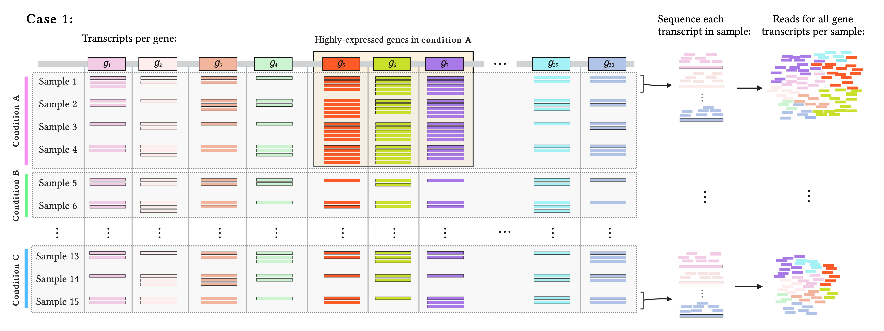
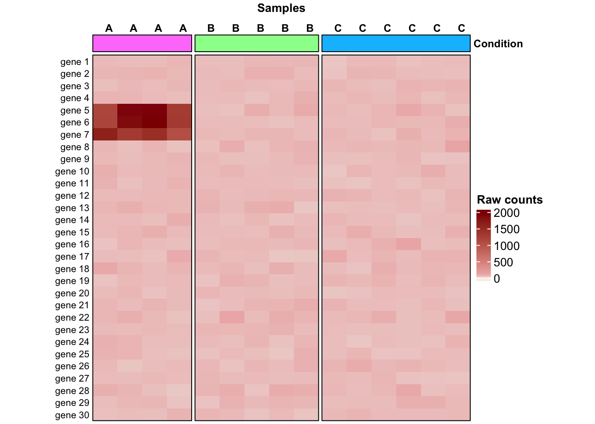
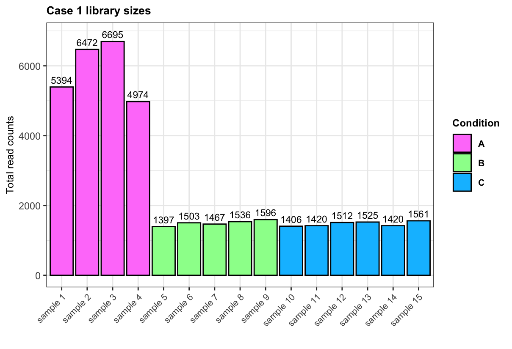
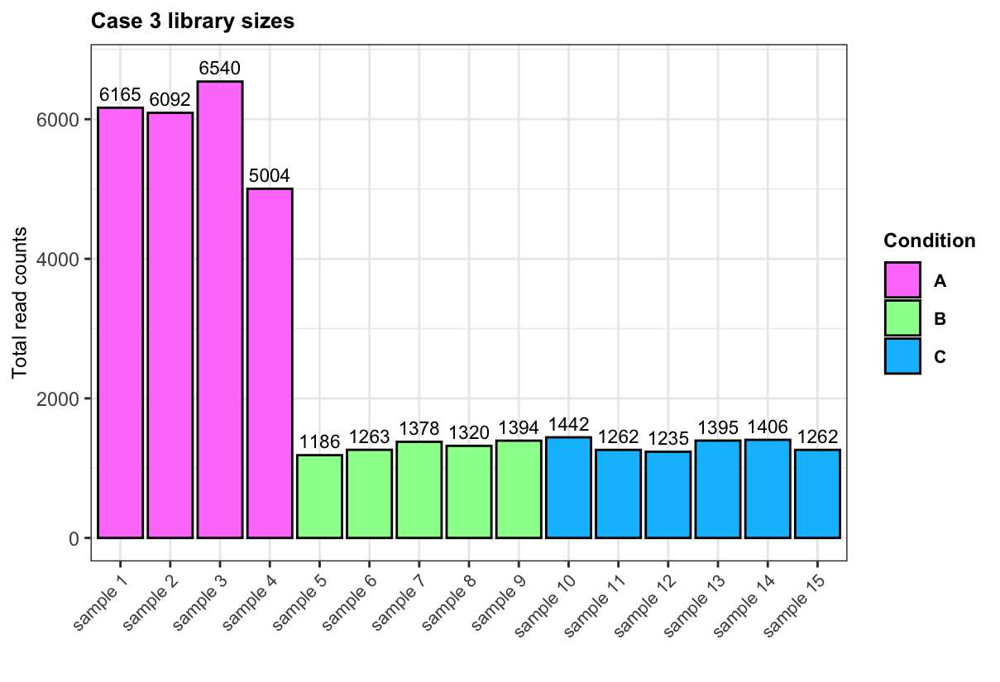
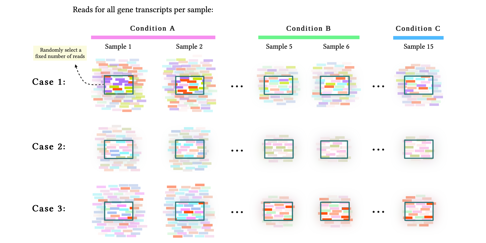
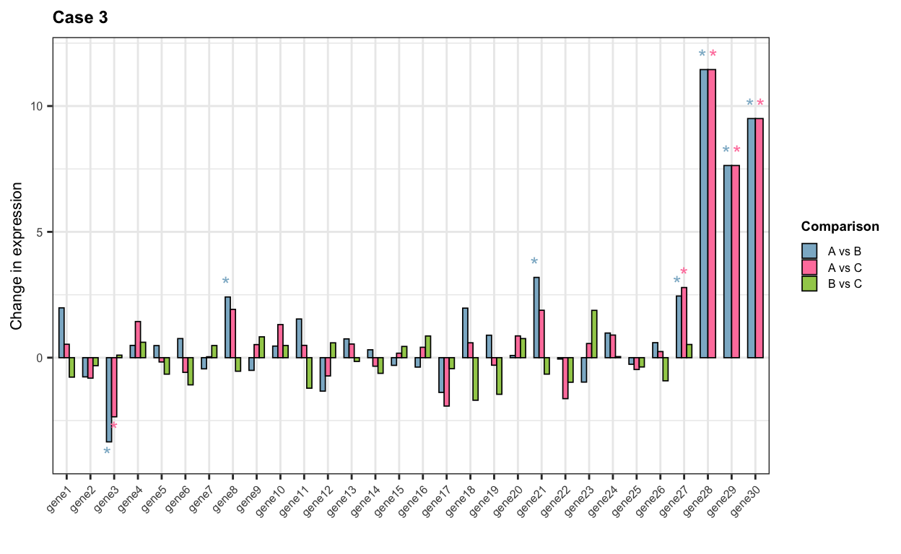
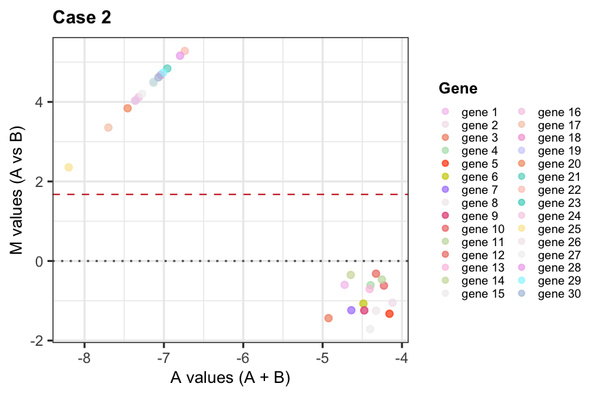
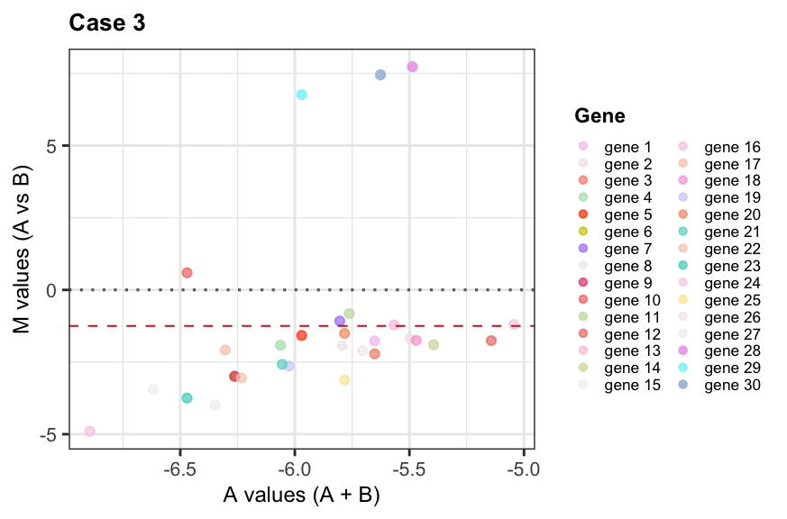

Demonstration of the RNA composition bias in RNA-seq data, its impact on differential gene expression analysis, and its correction using the TMM method.
Author
Daianna Gonzalez-Padilla
Published
December 12, 2024
Introduction
Normalization is a critical processing step in RNA-seq data analysis. By normalizing raw read counts generated through transcriptomics assays, we reduce the systematic effects that technical within- and between-samples differences have on the data, making the expression measurements more comparable across genes and samples, and enabling the study of transcriptome dynamics.
Varying sequencing depth among the samples is usually accounted for in normalization methods, where gene counts are scaled by sample library size (i.e. total sum of read counts per sample). This consideration is necessary when comparing expression levels across samples but is not the only factor at play, specially when samples are expected to have very variable transcriptome sizes across experimental conditions.
In a pioneer paper of 2010, Mark D. Robinson and Alicia Oshlack introduced the issue of the RNA composition bias in RNA-seq data, and developed the Trimmed Mean of M-values (TMM) method to adjust for it. As a widely-implemented normalization scheme, it is important to understand why sample RNA population differences are a concern for normalization and how TMM accounts for it.
What you’ll learn here
Visualize RNA-seq gene expression estimates as sampling artifacts and the implications of it in downstream differential gene expression (DGE) analysis.
Understand the RNA composition bias: explore cases of transcriptomes differing between samples and how they introduce a proportionality issue in read count data as a result of sampling effects in RNA-seq.
Demonstrate how such RNA composition cases increase the false positive rates in DGE.
Learn how the TMM method works to eliminate the RNA composition bias.
RNA-seq counts: a sampling artifact?
Hypothetical scenarios
Imagine we have 15 samples across 3 experimental conditions (A, B, and C), each containing all the transcripts expressed from 30 genes with the same length. Suppose all transcripts in each sample are sequenced, without restricting the number of sequenced molecules per library. This fictional scenario would result in sequencing reads for all transcripts per gene, thus serving as estimates of true expression*.
Then, think of the following three cases:
Case 1: Highly-expressed genes in one condition:
Of the 30 genes, 27 have similar expression levels in all three conditions, and 3 are more highly-expressed in condition A than in the other two conditions (genes 5, 6, and 7).

Below, we create a matrix of raw read counts from a negative binomial distribution centered in 50, for all 30 genes across the 15 samples. Then, we introduce the 3 highly-expressed genes (counts from 1,000 to 2,000) in condition A only.
library(ComplexHeatmap)library(circlize)## 15 samples across 3 conditions conditions <-rep(c("A", "B", "C"), c(4, 5, 6))################################################################## Case 1:################################################################## Raw counts for 30 genes across the 15 samples as:## random numbers following a NB with mean = mu and var = mu + (mu^2/size)set.seed(12242024)expr_case1 <-matrix(data =rnbinom(450, mu=50, size=20), nrow =30)colnames(expr_case1) <- conditionsrownames(expr_case1) <-paste("gene", 1:30)## Introduce the 3 highly-expressed genes in condition A expr_case1[c("gene 5", "gene 6", "gene 7"), 1:4] <-sample(c(1000:2000), replace = T, size =12)## Heat mapcol_anno <-HeatmapAnnotation(Condition =anno_block(gp =gpar(fill =c("orchid1", "palegreen1", "deepskyblue1"), col ="black"), show_name = T), annotation_name_gp =gpar(fontsize =9, fontface ="bold"))Heatmap(expr_case1,name ="Raw counts", top_annotation = col_anno, col =colorRamp2(c(1, 10, 100, 2000), c("linen", "mistyrose2", "rosybrown2", "darkred")),cluster_rows =FALSE,cluster_columns =FALSE,column_split = conditions,column_title ="Samples",column_title_gp =gpar(fontsize =10, fontface ="bold"),column_names_side ="top",column_names_gp =gpar(fontsize =9, fontface ="bold"),column_names_rot =0,show_row_names =TRUE,row_names_gp =gpar(fontsize =8),row_names_side ="left",border =TRUE,heatmap_width =unit(12.5, "cm"),heatmap_height =unit(12.5, "cm"))

Case 2: Genes expressed uniquely in one condition:
In a separate scenario, imagine that of the 30 genes, half are similarly expressed across the three conditions and half are uniquely expressed in condition A, but at the same level as the other genes. In such way, samples of condition A have twice the number of expressed genes of samples in B and C.
Case 3: Highly-expressed genes unique to one condition:
In the third scenario, of the 30 genes, 27 have similar expression levels in all 3 conditions, and 3 are uniquely expressed in condition A and are more highly-expressed than the rest of genes (genes 28, 29, and 30).
*The number of reads mapping to a given gene in a sample depends on gene expression (number of gene transcripts), sequencing depth (number of sequenced reads), and gene length: larger genes result in more mapping reads. Thus, read counts are not direct estimations of gene expression. In our examples, however, we are assuming all existing transcripts in a sample are captured and equally sequenced and genes have the same length, so read counts reflect expression.
Transcriptomes that are naturally different
Something perhaps evident but worth showing is that the sizes of the “true” total libraries we just generated, vary considerably between samples in these three hypothetical but not unlikely scenarios. In all cases, samples in condition A have greater library sizes because of highly-expressed genes in Case 1, more expressed genes in Case 2, or both in Case 3, as presented in the below bar plots.
library(ggplot2)## Sample library sizes and conditionslibrary_sizes <-data.frame("lib_size_case1"=apply(expr_case1, 2, sum),"lib_size_case2"=apply(expr_case2, 2, sum),"lib_size_case3"=apply(expr_case3, 2, sum),"sample"=paste("sample", 1:15),"Condition"= conditions)## Order samples for plottinglibrary_sizes$sample <-factor(library_sizes$sample, levels =unique(library_sizes$sample))## Bar plot for library sizes in each case for(case in1:3){## args for adding numbers ynum <-ifelse(case ==2, 60, 200) plot <-ggplot(data = library_sizes, aes(x = sample, y = .data[[paste0("lib_size_case", case)]], fill = Condition)) +geom_bar(stat ="identity", colour ="black") +geom_text(aes(y = .data[[paste0("lib_size_case", case)]] + ynum, label = .data[[paste0("lib_size_case", case)]]), size =3) +theme_bw() +labs(title =paste("Case", case, "library sizes"), x ="", y ="Total read counts") +scale_fill_manual(values =c("A"="orchid1", "B"="palegreen1", "C"="deepskyblue1")) +theme(plot.title =element_text(face ="bold", size =10), axis.title.y =element_text(size =9), axis.text.x =element_text(size =8, angle =45, hjust =1), legend.title =element_text(face ="bold", size =9), legend.text =element_text(face ="bold", size =8))print(plot)}


Randomly picking reads ü§èüèº
The differences in total expression between samples wouldn’t represent a major issue if we had the capacity to sequence all molecules present in each sample, just as we have been assuming. But in reality, in RNA-sequencing experiments we have a fixed number of reads per library, meaning not all molecules can be sequenced in each sample but there’s a sampling of molecules from which reads are generated. Think of it as having the pool of reads for all transcripts expressed in a sample, and having to randomly select a fixed number of them.

For this reason, RNA-seq counts suffer from sampling effects. In the next section we’ll clearly see why this property in RNA-seq data represents an issue in downstrem analysis.
The RNA composition bias
The sampling of molecules introduces a proportionality problem in the RNA-seq count data: in those samples with greater total expression, caused by a number of highly-expressed genes (Case 1), a greater number of expressed genes (Case 2), or both (Case 3), a greater proportion of reads will come from such genes, taking away reads for all the other genes and apparently reducing their expression. This is depicted in the previous figure: note how in condition A, in the first case more reads from the highly-expressed genes 5, 6, and 7 are selected; in the second case, reads from the genes 16, 17, …, 29, 30, expressed in condition A only, reduce the number of reads for the other genes, and in the third case most selected reads correspond to the condition A-only highly-expressed genes 28, 29, and 30.
This is known as the RNA composition or population bias: the molecule sampling in sequencing experiments artificially reduce the expression of under-sampled genes in samples with larger RNA content. Analogously, this can also lead to apparent increments in gene expression in samples with lowly-expressed genes (case not shown here). This implies RNA-seq count data sets need to be processed to make accurate inferences from them.
In the next code we simulate this read sampling by randomly selecting 650 reads per sample in each case and we plot the proportion of selected reads that correspond to each gene. Note that by selecting the same number of reads in all samples, library size is held constant and no differences in read counts are due to sequencing depth.
library(rlang)library(reshape2)library(Polychrome)for(case in1:3){ expr <-eval(parse_expr(paste0("expr_case", case)))## Create pool of reads per gene in each samplecolnames(expr) <- library_sizes$sample reads_per_gene_per_sample <-apply(expr, 2, function(sample) {rep(rownames(expr), sample)})## Randomly select 650 reads per sampleset.seed(12242024) reads_sample <-lapply(reads_per_gene_per_sample, function(sample_reads) {sample(sample_reads, size =650, replace =FALSE)})## Read counts per gene after sampling rna_seq_expr <-lapply(reads_sample, function(sample){table(sample)[rownames(expr)]}) rna_seq_expr <-as.data.frame(do.call(cbind, rna_seq_expr))rownames(rna_seq_expr) <-rownames(expr)## Gene with NA = 0 reads rna_seq_expr[is.na(rna_seq_expr)] <-0assign(paste0("rna_seq_expr_case", case), rna_seq_expr) rna_seq_expr$gene <-rownames(rna_seq_expr) rna_seq_expr_melted <-melt(rna_seq_expr)colnames(rna_seq_expr_melted) <-c("gene", "sample", "count")## Order genes for plotting rna_seq_expr_melted$gene <-factor(rna_seq_expr_melted$gene, levels =paste("gene", 1:30))## Color palette for genesset.seed(12212024) col_palette <-sample(c(hcl.colors(30, palette ="Pastel 1"), hcl.colors(30, palette ="PinkYl"),hcl.colors(30, palette ="Cyan-Magenta")), 30, replace = F)names(col_palette) <-rownames(expr) col_palette[paste("gene", c(5:7, 28:30))] <-c("orangered", "yellow3", "mediumpurple1", "plum2", "cadetblue1", "lightsteelblue")if(case ==1){ alphas <-rep(c(0.7, 1, 0.7), c(4, 3, 23)) }elseif(case ==2){ alphas <-rep(0.7, 30) }else{ alphas <-rep(c(0.7, 1), c(27, 3)) }assign(paste0("alphas_case_", case), alphas)## Bar plot plot <-ggplot(data = rna_seq_expr_melted, aes(x = sample, y = count, fill = gene, alpha = gene)) +geom_bar(stat ="identity", colour ="black", linewidth =0.2) +theme_bw() +labs(title =paste("Case", case), x ="", y ="Reads per gene after sampling", fill ="Gene") +scale_fill_manual(values = col_palette) +scale_alpha_manual(name ="Gene", values = alphas) +theme(plot.title =element_text(face ="bold", size =10), axis.text.x =element_text(size =8, angle =45, hjust =1), axis.title.y =element_text(size =9), legend.title =element_text(face ="bold", size =9), legend.text =element_text(size =8), legend.key.width =unit(0.35, "cm"),legend.key.height =unit(0.35, "cm"))print(plot)}
In the following heat maps we plot the count matrices after sampling.
Confirming the aforementioned, note in the bar plots the dominance in read proportion of highly-expressed and/or unique genes in condition A, and in the heat maps, the consequent expression reduction of non-highly expressed and shared genes.
More false positives …
By design, we know that in all three cases most genes are not differentially expressed (DE) between conditions. Let’s formally test if the differences in the mean expression of each gene in A vs B, A vs C, and B vs C with the original raw counts (before sampling), are statistically significant with two sample t-tests (but keep in mind this test assumes data normality and equal variances in both groups).
Below we are plotting the t-statistics per gene for each comparison and in each case. These statistics capture the sign and size of the difference in gene expression between conditions. The expression changes that were significant (p-value <0.05) have a “*” above the bar.
## t-test per gene based on counts before and after sampling t_test_expr <-function(expr_counts){for(case in1:3){## Count matrix expr <-eval(parse_expr(paste0(expr_counts, "_case", case))) expr <-as.matrix(expr)colnames(expr) <- conditions## Create matrices to save gene p-values and t-stats pvals <-matrix(data =NA, nrow =30, ncol =3) tstats <-matrix(data =NA, nrow =30, ncol =3)colnames(pvals) <-colnames(tstats) <-c("A_vs_B", "A_vs_C", "B_vs_C")rownames(pvals) <-rownames(tstats) <-paste0("gene", 1:30)## Iterate over genesfor(i in1:nrow(expr)){## t-test for gene expr in condition1 vs condition2 condition_pairs <-list(c("A", "B"), c("A", "C"), c("B", "C"))if((case ==2& i>15) | (case ==3& i>27)){ condition_pairs <-list(c("A", "B"), c("A", "C")) }for(condition_pair in condition_pairs){ comparison <-paste0(condition_pair[1], "_vs_", condition_pair[2]) gene <-paste0("gene", i) gene_expr <- expr[i, colnames(expr) %in% condition_pair] formula <- gene_expr ~ Condition results <-t.test(formula = formula, data =data.frame("Condition"= conditions[conditions %in% condition_pair])) pvals[gene, comparison] <- results$p.value tstats[gene, comparison] <- results$statistic } }## Plot t-stats (expression change size) melted_pvals =na.omit(melt(pvals)) melted_tstats =na.omit(melt(tstats)) data =cbind(melted_pvals, melted_tstats$value)colnames(data) <-c("gene", "comparison", "p", "t") data$signif <-sapply(data$p, function(p){ if(p<0.05){"*"} else{NA}}) text_pos <-ifelse(expr_counts =="expr", 0.5, 1) plot <-ggplot(data, aes(x = gene, y = t, fill = comparison, color = comparison)) +geom_bar(stat ="identity", position="dodge", colour ="black", width =0.65, linewidth =0.3) +geom_text(aes(x = gene, y = t + ((sign(t))*text_pos), label = signif, group = comparison, color = comparison), position =position_dodge(0.9), hjust =0.5,show.legend = F) +theme_bw() +labs(title =paste("Case", case), x ="", y ="True change in expression", fill ="Comparison") +scale_fill_manual(values =c("A_vs_B"="#8DB6CD", "A_vs_C"="#FF82AB", "B_vs_C"="#A2CD5A"), labels =c("A vs B", "A vs C", "B vs C")) +scale_color_manual(values =c("A_vs_B"="#8DB6CD","A_vs_C"="#FF82AB","B_vs_C"="#A2CD5A")) +theme(plot.title =element_text(face ="bold", size =9), axis.text.x =element_text(size =6, angle =45, hjust =1), axis.title.y =element_text(size =8), axis.text.y =element_text(size =6), legend.title =element_text(face ="bold", size =7), legend.text =element_text(size =6), legend.key.width =unit(0.3, "cm"),legend.key.height =unit(0.3, "cm"))print(plot) }}t_test_expr(expr_counts ="expr")

Not surprisingly, highly-expressed and unique genes in condition A have significantly higher expression when compared to the other two conditions, and except for a few false positives, the rest of genes don’t present significant expression changes.
Now, as you may be suspecting, the decrease in counts for genes in condition A after sampling results in false discoveries of negative differential expression.
t_test_expr(expr_counts ="rna_seq_expr")
How to solve the problem?
Let’s denote the true and unknown total library size of each sample \(i\) by \(S_i\) (i.e. the complete pool of reads per sample), and the RNA-seq library size by \(N_i\) (reads selected after sampling). We define the total and unknown read counts of gene \(g\) in samples \(k\) and \(r\) as \(z_{gk}\) and \(z_{gr}\), respectively. We know that \(S_k\) is \(\alpha\) times greater than \(S_r\), i.e. \(S_k = \alpha S_r\).
Then, the number of reads after sampling for \(g\) in samples \(k\) and \(r\) are given by \(y_{gk} = \frac{z_{gk}}{S_k}N_k\) and \(y_{gr} = \frac{z_{gr}}{S_r}N_r\), respectively. These correspond to the RNA-seq counts to which we have access.
If gene \(g\) is a true non-DEG between these two samples, then \(z_{gk} = z_{gr}\) and we expect the counts for these gene to be equal in our RNA-seq count data, i.e., \(y_{gk} = y_{gr}\). But we know that’s not met since \(y_{gk} = \frac{z_{gk}}{S_k}N_k = \frac{z_{gr}}{\alpha S_r}N_k\) and given that we fixed the number of selected reads, \(N_k = N_r\) and \(y_{gk} = \frac{z_{gr}}{\alpha S_r}N_r ≠ \frac{z_{gr}}{S_r}N_r = y_{gr}\). We have that \(y_{gk} \alpha = y_{gr}\) and we aim to estimate such factor \(\alpha = \frac{S_k}{S_r}\) to scale read counts in sample \(k\) to equal them to those in \(r\). With library size-normalized counts, we’d have \(\frac{y_{gk}}{N_k} \alpha= \frac{y_{gr}}{N_r}\), which is the same as \(\frac{y_{gk}}{N_k} \sqrt{\alpha^2} = \frac{y_{gr}}{N_r}\) and equals to \(\frac{y_{gk}}{N_k} \sqrt{\alpha} = \frac{y_{gr}}{N_r \sqrt{\alpha}}\), which in turn is equivalent to divide library \(N_k\) by \(\sqrt{\alpha}\) and multiply library \(N_r\) by \(\sqrt{\alpha}\); that’s what we refer to with the scaling of sample library sizes.
Now, the fold change in the expression of a non-DEG \(g\) in sample \(k\) vs sample \(r\), after sampling, is given by \(\frac{y_{gk}}{y_{gr}} = \alpha ^{-1} = \frac{S_r}{S_k}\). So we are basically aiming to scale library sizes by the inverse of the expression fold change of a non-DEG. This applies to all true non-DEGs.
We cannot estimate \(S_k\) and \(S_r\) but we can take advantage of the inverse relationship between \(\frac{S_k}{S_r}\) and the fold changes of non-DEGs, to approximate it by computing a global mean expression fold change across all (assumed) non-DEGs for sample \(k\) vs \(r\).
Tip
A visual way to show why we need to estimate \(\alpha\) is, instead of selecting a fixed number of reads in the sampling, we can think of selecting a fixed proportion of reads per sample \(i\) (\(p_i = \frac{N_i}{S_i}\)), which would preserve the original true RNA composition of the samples and allow the direct comparison of gene counts between them.
By selecting the same proportion \(p\) of reads from \(S_k\) and \(S_r\), on average we keep \(z_{gk} \times p\) and \(z_{gr} \times p\) reads for gene \(g\) in samples \(k\) and \(r\), making the expression estimates comparable between them. But the reality is that we have a fixed number of reads and \(p_k ≠ p_r\). Multiplying by \(\alpha\) we obtain \(\frac{N_k}{S_k} \alpha = \frac{N_r}{S_r}\), making proportions in both samples equal.
TMM method for estimating scaling factors
What Mark D. Robinson and Alicia Oshlack proposed with their Trim Mean of M-values method, implemented in edgeR(Chen et al. 2025), is an empirical approach to approximate \(\frac{S_r}{S_k}\), which can be summarized as follows:
Compute gene-wise log-normalized expression ratios between samples \(k\) and \(r\) (log-fold changes or logFCs):
and the mean gene log-normalized expression across both samples as:
\[
A_g = \frac{log_2(\frac{y_{gk}}{N_k}) + log_2(\frac{y_{gr}}{N_r})}{2}
\] where \(y_{gk}\) and \(y_{gr}\) are the RNA-seq counts of gene \(g\) in samples \(k\) and \(r\), respectively.
In the next code we compute the \(M\) and \(A\) values for all genes in each case, comparing sample 1 of condition A vs sample 5 of condition B. We then plot \(M\) vs \(A\) values to spot up and down differentially expressed genes.
## MA plotsfor(case in1:3){## Select sample 1 as k and 5 as r rna_seq_expr <-as.matrix(eval(parse_expr(paste0("rna_seq_expr_case", case)))) yg <- rna_seq_expr[, c(1,5)]colnames(yg) <-c("k", "r")## Replace 0s with 1 (smallest positive integer) yg[yg ==0] <-1## Library sizes Nk =colSums(yg)["k"] Nr =colSums(yg)["r"]## Compute M and A values M_values <-log2( (yg[,"k"] / Nk) / (yg[,"r"] / Nr) ) A_values <- (log2(yg[,"k"] / Nk) +log2(yg[,"r"] / Nr)) /2## Variance weight per gene (see step 3) vg <- ((Nk - yg[, "k"])/(Nk * yg[, "k"])) + ((Nr - yg[, "r"])/(Nr * yg[, "r"])) df <-data.frame("M"= M_values, "A"= A_values, "v"= vg,"gene"=names(M_values)) df$gene <-factor(df$gene, levels = df$gene)assign(paste0("df_case_", case), df)## M vs A plot plot <-ggplot(df, aes(x = A, y = M, color = gene, alpha = gene)) +geom_point() +theme_bw() +scale_color_manual(values = col_palette) +guides(colour =guide_legend(override.aes =list(size =1.2))) +scale_alpha_manual(name ="Gene", values =get(paste0("alphas_case_", case))) +geom_hline(yintercept =0, size =0.55, linetype =3, color ="gray40") +geom_hline(yintercept =mean(df$M), size =0.35, linetype =2, color ="firebrick3") +labs(title =paste("Case", case), x ="A values (A + B)", y ="M values (A vs B)", color ="Gene") +theme(plot.title =element_text(face ="bold", size =10), axis.text.x =element_text(size =8), axis.text.y =element_text(size =8), axis.title.x =element_text(size =9), axis.title.y =element_text(size =9), legend.title =element_text(face ="bold", size =8.5), legend.text =element_text(size =6.5), legend.key.width =unit(0.25, "cm"),legend.key.height =unit(0.25, "cm"))print(plot)}


Just as we have previously demonstrated, observe how all genes have logFCs (\(M\) values) offset from zero, deviating their mean as well (red dashed line). \(M\) vs \(A\) plots are useful in exploratory analysis to spot highly-expressed genes (top right corner in Case 1), genes unique to one condition (top left corner in Case 2), and unique highly-expressed genes (top middle in Case 3), which explain the observed negative logFCs for the remaining genes, and thus highlighting the need to scale library sizes to move these logFCs towards zero.
Caution
This procedure assumes that \(y_{gk}, y_{gr} >0\), so an initial filtering of non/lowly-expressed genes is desired (see Lun, A. 2018). Indeed, edgeR::calcNormFactors() removes in advance genes with zero counts in any of the samples. Here, however, we replaced 0s with 1s to keep most genes for illustrative purposes.
Trim the upper and lower x% (30% by default) of \(M\) values that represent genes with biased expression towards one condition, as well as the upper and lower y% (5% by default) of \(A\) values, corresponding to genes with extreme expression. This keeps genes that are considered non-differentially and moderately expressed (assumed to be the majority of the genes) and therefore useful to estimate the global expression fold change between samples.
Given the very few genes we have in our simulated data, in total we’ll trim 20% of \(M\) values (10% up and 10% low) and 10% of \(A\) values (5% up and 5% low).
Estimate the average of the \(M\) values for not trimmed genes (\(G^*\)), each weighted by gene inverse variances (\(w_{gk}^r\)) to account for smaller variances in logFCs of genes with larger read counts.
where \(w_{gk}^r = 1/v_{gk}^r\) and \(v_{gk}^r = \frac{N_k-Y_{gk}}{N_kY_{gk}} + \frac{N_r-Y_{gr}}{N_rY_{gr}}\).
Then, we define the normalization factor \(TMM_k^r = 2^{f_k^r}\) as an estimate of \(\frac{1}{\alpha}=\frac{S_r}{S_k}\) and we scale the library \(k\) by \(\sqrt {TMM_k^r}\) and library \(r\) by \(1/\sqrt{TMM_k^r}\).
\(TMM\) is the global fold change in expression of sample \(k\) compared to sample \(r\) after sampling reads.
In the next code we manually find this factor and compare it with the one returned by edgeR::calcNormFactors() and with the true known value of \(\frac{S_r}{S_k}\).
library(edgeR)## Compute scaling factors for(case in1:3){## Non-trimmed genes G* df_trimmed <-get(paste0("df_trimmed_case_", case))## Inverse variance weights df_trimmed$w <-1/df_trimmed$v## Weighted sum of M values f =sum(df_trimmed$M * df_trimmed$w)/sum(df_trimmed$w)## Norm factor tmm <-2** f## Scaling factors for k and r librariesprint(paste0("Case ", case, ":"))print(paste("Manually-computed f = log2(TMM) =", signif(f, digits =5)))print(paste("Manually-computed TMM factor = 2^f (aprox to 1/α) =", signif(tmm, digits =5)))print(paste("Manually-computed scaling factors (√TMM for k and 1/√TMM r):", signif(sqrt(tmm), digits =5), signif(1/sqrt(tmm), digits =5)))## Factors returned by edgeR::calcNormFactors() based on RNA-seq counts rna_seq_expr <-as.matrix(get(paste0("rna_seq_expr_case", case))) yg <- rna_seq_expr[, c(1,5)]colnames(yg) <-c("k", "r") edgeR_NormFactors <-calcNormFactors(yg, method ="TMM", refColumn =2, logratioTrim =0.1, sumTrim =0.05)assign(paste0("edgeR_NormFactors_", case), edgeR_NormFactors)print(paste("edgeR scaling factors for k and r:",paste(signif(unname(edgeR_NormFactors), digits =5), collapse =" ")))## True Sr/Sk ratio_true <- library_sizes[5, paste0("lib_size_case", case)] / library_sizes[1, paste0("lib_size_case", case)] print(paste("True FC = 1/α = Sr/Sk = ", signif(ratio_true, digits =5)))print(paste("True scaling factors (√1/α for k and 1/√1/α r):", signif(sqrt(ratio_true), digits =5), signif(1/sqrt(ratio_true), digits =5)))cat("\n")}
[1] "Case 1:"
[1] "Manually-computed f = log2(TMM) = -1.5895"
[1] "Manually-computed TMM factor = 2^f (aprox to 1/α) = 0.33229"
[1] "Manually-computed scaling factors (√TMM for k and 1/√TMM r): 0.57644 1.7348"
[1] "edgeR scaling factors for k and r: 0.57644 1.7348"
[1] "True FC = 1/α = Sr/Sk = 0.25899"
[1] "True scaling factors (√1/α for k and 1/√1/α r): 0.50891 1.965"
[1] "Case 2:"
[1] "Manually-computed f = log2(TMM) = -0.45766"
[1] "Manually-computed TMM factor = 2^f (aprox to 1/α) = 0.72817"
[1] "Manually-computed scaling factors (√TMM for k and 1/√TMM r): 0.85333 1.1719"
[1] "edgeR scaling factors for k and r: 0.72308 1.383"
[1] "True FC = 1/α = Sr/Sk = 0.52249"
[1] "True scaling factors (√1/α for k and 1/√1/α r): 0.72284 1.3834"
[1] "Case 3:"
[1] "Manually-computed f = log2(TMM) = -1.8317"
[1] "Manually-computed TMM factor = 2^f (aprox to 1/α) = 0.28093"
[1] "Manually-computed scaling factors (√TMM for k and 1/√TMM r): 0.53003 1.8867"
[1] "edgeR scaling factors for k and r: 0.49584 2.0168"
[1] "True FC = 1/α = Sr/Sk = 0.19238"
[1] "True scaling factors (√1/α for k and 1/√1/α r): 0.43861 2.2799"
Note that in case 2 and 3 the factors we compute manually don’t match with the ones returned by calcNormFactors() because we transformed 0 counts into 1s, whereas this edgeR function removes genes with zero counts.
These factors are then used to scale the original RNA-seq sample library sizes and normalize counts. Look in the following plots the more homogeneous expression of true non-DEGs in samples 1 and 5 after normalizing counts by effective (scaled) library sizes, recapitulating the true expression patterns shown in the very first heat maps.
If you’ve made it this far, you might be wondering what’s to do with all the other samples. TMM uses the same chosen reference sample to normalize all of the other samples against and centers the computed scaling factors across all samples around 1.
Which sample to choose as the reference?
If not specified, the TMM method, as implemented in edgeR, selects as the reference the sample whose expression is closer to the average expression across all samples. More specifically, it chooses the sample whose 75th expression quantile, normalized by library size, is closer to the mean of the normalized 75th quantiles for all samples. Check an example here.
Conclusion
Initially, normalizing expression counts by true biological RNA composition differences seems counterintuitive as those are the differences we aim to detect in DGE analysis. But I hope you have it clear now that the problem arises from sampling effects in RNA-seq data, and that gene read counts depend not only on gene expression levels and length, but also on the inherent properties of the RNA samples from which they come.
Library size normalization is appropriate in cases where samples are expected to have similar total mRNA amounts, such as replicate samples within the same condition. But when working with multiple experimental conditions, such as tissues and diagnostic groups that are expected to markedly vary in their transcriptomes, adjusting for RNA composition differences is required to discover genes with true expression changes and discard the non-differentially expressed ones.
The key take-home message for you is that if DGE analysis results in globally-shifted gene logFCs, these are likely driven by differences in the sizes of sample RNA populations and have to be adjusted. As we have seen, TMM is a straightforward and effective method to scale library sizes under the assumption that most genes are non-DEGs. But as a note, TMM is not designed nor optimal to deal with cases of large asymmetric differential expression, where a high proportion of genes are DE in one direction and thus end up having similar read proportions across conditions after sampling (Evans, Hardin, and Stoebel 2017).
Relevant links and bibliography
üìÑ Original publication for TMM:
Robinson, M.D., Oshlack, A. A scaling normalization method for differential expression analysis of RNA-seq data. Genome Biol 11, R25 (2010). https://doi.org/10.1186/gb-2010-11-3-r25
Chen, Yunshun, Lizhong Chen, Aaron T L Lun, Pedro Baldoni, and Gordon K Smyth. 2025. “edgeR V4: Powerful Differential Analysis of Sequencing Data with Expanded Functionality and Improved Support for Small Counts and Larger Datasets” 53: gkaf018. https://doi.org/10.1093/nar/gkaf018.
Evans, Ciaran, Johanna Hardin, and Daniel M Stoebel. 2017. “Selecting Between-Sample RNA-Seq Normalization Methods from the Perspective of Their Assumptions.”Briefings in Bioinformatics 19 (5): 776–92. https://doi.org/10.1093/bib/bbx008.